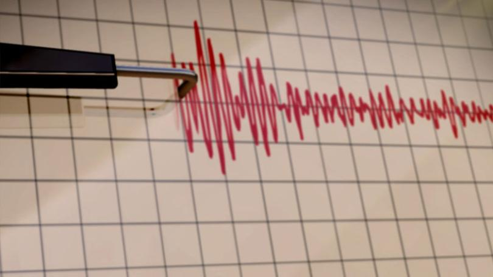
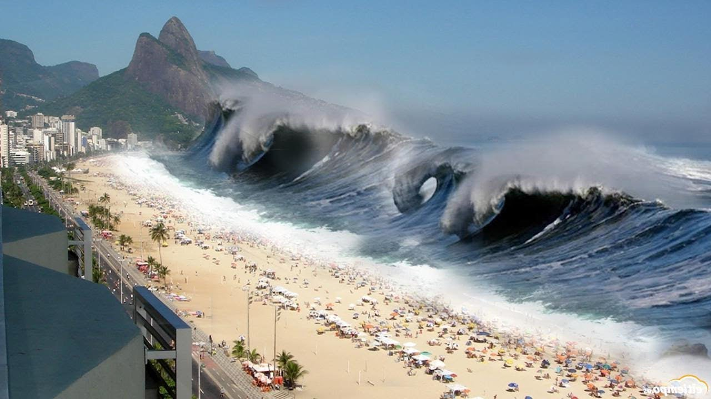
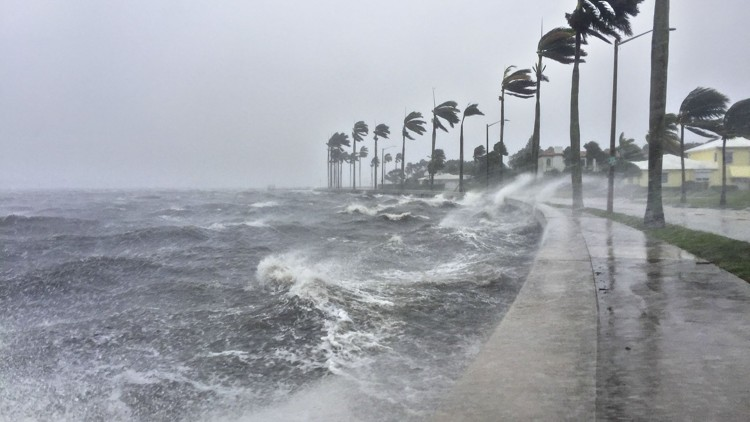
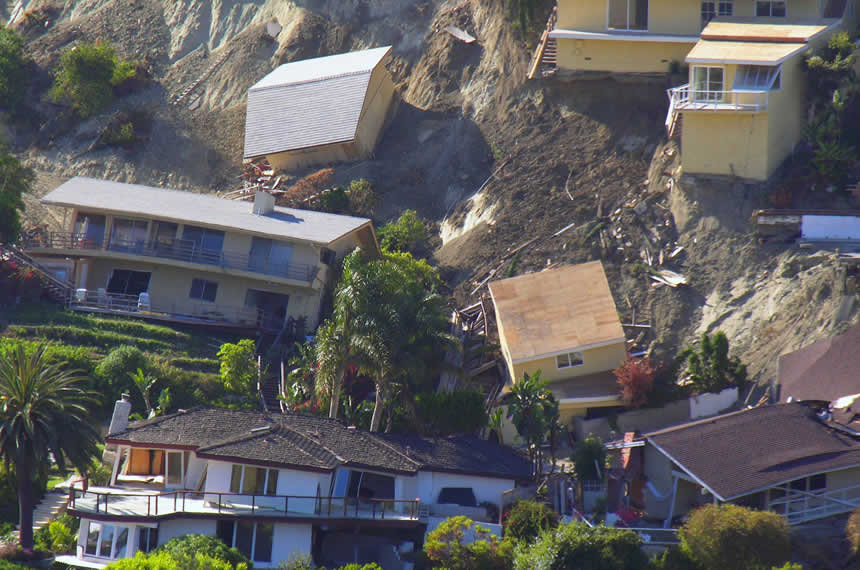

Please select the language :




Check the weather updates here.Please wait while weather information loads and reload if doesn't open once
Use maps for viewing safe places incase of evacuation and also use radio for communication